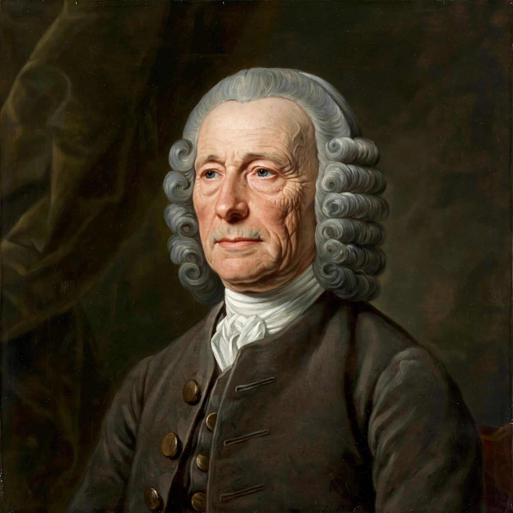

Wikipedia — the free encyclopedia
| Born | 3 April 1693, Foulby, Yorkshire |
| Died | 24 March 1776, London |
| Occupation | Carpenter and clockmaker |
| Known for | First practical marine chronometers (H1–H5) |

John Harrison (1693–1776), the clockmaker who solved the longitude problem.
John Harrison (1693–1776) was an English carpenter and self-taught clockmaker who solved the longitude problem by building timekeepers accurate enough to carry Greenwich time across an ocean. His work took most of his life and was repeatedly obstructed by the very Board of Longitude set up to reward it.
Largely self-educated, Harrison built precision pendulum clocks of wood, using self-lubricating lignum vitae and the grasshopper escapement, before turning to the sea problem.
His first sea clock, H1 (completed 1735), was a large machine of linked balances that performed well on a trial voyage to Lisbon. Rather than claim the reward he spent years improving it: H2 and then H3 occupied him for nearly two decades, introducing the bimetallic strip and caged roller bearings. H4, finished in 1759, was a breakthrough of a different kind — a large watch only 13 cm across. On its 1761–62 trial to Jamaica it erred by only about five seconds in 81 days, equivalent to little more than a nautical mile of longitude.
Even so, the Board demanded further trials and full disclosure of the mechanism, and paid the balance of the £20,000 reward only in 1773, after Harrison, aged 80, appealed to King George III and Parliament. H5, his own final watch, was tested by the King personally. Harrison's chronometers are preserved at the Royal Observatory, Greenwich, where H1, H2 and H3 still run.
Marine chronometer · History of longitude · Royal Observatory, Greenwich